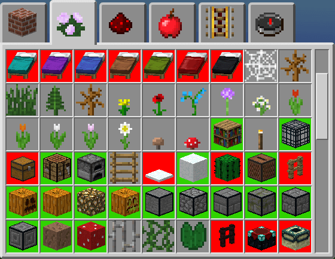
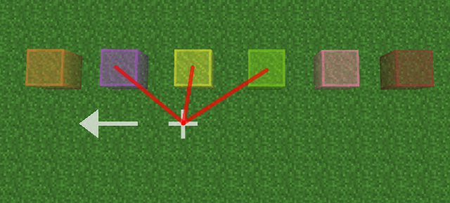

MCEdit internals
Some of the algorithms and data structures used in MCEdit 2.0 are not that trivial to understand by looking at the source code, even heavily commented, especially since the rendering engine makes heavy use of what appears to be cryptic static tables. This document will provide in-depth explanation for some of them.
Pre-requisite: knowledge of OpenGL, 3D math and C programming language.
Written by T.Pierron, July 2020
Conventions
Before reading this document further, there are a few facts to keep in mind, because they are used quite extensively throughout the engine. To avoid repeating them over and over again, here is what needs to be known:
Coordinate system
The coordinate system uses a left hand axis. X is mapped to east-west (increasing X goes to east, decreasing goes to west). Z is mapped to north-south (increasing Z goes to south, decreasing goes to north). Y is elevation.
Meshes of various objects use a counter-clockwise (CCW) orientation to check if they are front-facing.
Coordinates are relative to player (ie: if you want an object close to camera, coordinates must be close to player position, not 0,0,0). XXX That's not good actually: coords are stored in floats, loss of precision will be problematic.
Face enumeration order
Whenever there is a need to enumerate nearby objects within the voxel space, the same order will be used almost everytime. For example: to enumerate the 6 nearby voxels a given block is directly connected to, to enumerate the 6 neighbors a given chunk is connected to, to generate the mesh of the 6 faces a given cube is composed of, ... these will always be done in the same order:
- South
- East
- North
- West
- Top
- Bottom
Keep that order in mind, it is used extensively in one form or another throughout the entire code base. It can be used as indices in a for-loop from 0 to 5, be used as a bit field to remember which sides have been visited (therefore have values from 0 to 63), or simply as a enumeration value (SIDE_*).
You'll often see the abbreviation S,E,N,W,T,B (or sometimes just S,E,N,W) throughout the code base, this is a reminder of this order.
Technically, there are no obligations to respect that order all over the place, but it makes it easy to reuse the same look-up tables over and over again, without having to worry about compatibility.
Datatypes
Datatypes in the engine follows a small, but kind of helpful convention: if a structure has to be declared as a value, it is not typedef'ed, and the name always have a trailing _t (the t stands for type of course).
If there are no trailing _t and no struct, therefore it is a pointer. Consider the following example:
struct BlockIter_t iter;
BlockIter iterator;
From this convention, you know the second declaration is a pointer to a struct BlockIter_t.
Sometimes a typedef is introduced for struct to remove the need to type this keyword, because the type itself is used quite extensively. For example:
typedef struct NBTIter_t NBTIter_t; typedef struct NBTFile_t NBTFile_t;
But, the type will keep the _t suffix to indicate it is a value type, not a pointer.
Frustum culling
Frustum culling refer to the algorithm that can enumerate all the objects that are visible within the model-view-projection matrix. It is usually a compromise between precision of object's bounding box and computational power required to test those bounding boxes: we cannot spent too much time on the CPU checking for object's visibility (because in the meantime the graphics card could have probably already drawn this object) and on the other hand, including out-of-view objects, will requires useless work for both the CPU and the GPU.
The techniques used in this engine are not particularly revolutionary, but it uses a lot of little tricks that makes the source code particularly cryptic.
A
In other words by testing only one vertex, we can potentially add up to 8 chunks to the list of visible objects. Which means on average, we will have to test one point per chunk. That is reasonably cheap.
Testing if a vertex is part of a frustum is actually very easy: we can use the MVP matrix (the exact same one that will be used in the vertex shader), by simply multiplying that matrix with the coordinates of our vertex (using 1 as the fourth vector component). That is:
Vp = MVP * V
Then to test if a vertex is inside the frustum, we can simply use the properties of homogeneous coordinates:
Vp is in frustum if: -Vpw <= Vpx and Vpx <= Vpw and -Vpw <= Vpy and Vpy <= Vpw and -Vpw <= Vpz and Vpz <= Vpw
Vpw is the fourth component of our projected point. More precisely, each of these inequalities check if the coordinate is outside one of the 6 planes that defines the frustum. We'll need that information later.
In this engine, a struct Chunk_t (or Chunk if you just want a pointer) is a datatype that reference an entire column of 16x16 blocks of terrain. A struct ChunkData_t (or ChunkData as a pointer type) contain all the data (block IDs, sky light, block light, meta-data, ...) for one 16x16x16 blocks of terrain. Keep those datatypes in mind, they will be used throughout this section.
First version (pseudo-code)
So, a first version for this algorithm would be:
- Start with a empty list of visible chunk.
- Add the chunk where the player in that list.
- For each chunk in that list:
- For each of the 8 corners of the chunk:
- Check if corner is in frustum.
- If yes, add 8 connected chunks to the end of the list (if the chunk has not already been added yet).
- For each of the 8 corners of the chunk:
That algorithm seems pretty simple, but lacks a lot of house-keeping required to achieve our goal of one vertex checked per chunk.
As simple as this version is, it already has a few interesting properties:
- There was no particular constraints on the MVP matrix, and indeed this algorithm will work for any projection (orthogonal, perspective) any FOV and any render distance (near and far plane).
- The list of chunks will mostly be sorted from front to back. It is not perfect, but good enough to trigger some early depth culling from the GPU.
Implementation (C code)
Sadly, the implementation is a lot more complex than this though. Most of the complexity is to deal with edge cases though. If you look at the datatype needed for generating the visible list, you can see there are a few static tables:
struct Frustum_t { int32_t neighbors[8]; /* 8 corners having 8 neighbors: bitfield encode 27 neighbors */ uint8_t chunkOffsets[27]; /* bitfield of where each chunks are (S, E, N, W, T, B) */ uint8_t faces[6*4]; /* cross-plane faces */ uint8_t faceDir[6]; /* direction to go to find chunk connected to face */ uint8_t firstFree[256]; /* fake chunk allocator */ float * mvp; /* model-view-projection matrix (4x4) */ };
To achieve what's described in the first algorithm, we only need the first 2 tables: neighbors and chunkOffsets.
The order of each corner of a chunk is illustrated with the figure on the right. Each of these corners can potentially add 8 chunks, if that corner is contained within the frustum. By overlapping all those connected chunks you get a 3x3 cube of chunks. Therefore, the maximum number of connected chunks you can have from those 8 corners is 27.
This is what encodes the neighbors table: each of these 27 chunks are given a number between 0 and 26, and therefore can be encoded as a bitfield in a 32bit integer. The order is shown below (axis is the same as the figure on the right):
| 18 | 19 | 20 |
| 21 | 22 | 23 |
| 24 | 25 | 26 |
| 9 | 10 | 11 |
| 12 | 13 | 14 |
| 15 | 16 | 17 |
| 0 | 1 | 2 |
| 3 | 4 | 5 |
| 6 | 7 | 8 |
13 is therefore the chunk we are currently in. For example, if we checked that vertex 0 of a chunk is within the frustum, we know we can also add chunks 0, 1, 3, 4, 9, 10 and 12. Chunk 13 is not included, because at this point we already know that the center chunk is part of the frustum. Encoded as bitfield, with the nth bit set if chunk number n is in the frustum, the 7 chunks to add for vertex 0 can be encoded as 20 + 21 + 23 + 24 + 29 + 210 + 212 = 5659, and so on for the other 7 corners: that's what is stored in the neighbors table.
Enumerating neighbors
To enumerate all the connected chunks, we'll check if each corner of a chunk is within the frustum and accumulate those neighbor bitfields into a 32bit integer. Then, we can just use the chunkOffsets table to locate the nth chunk (with n varying from 0 to 26). Therefore this table will have 27 elements. Each element is a bitfield with the following meaning:
- bit 1 set: move to the south (+Z).
- bit 2 set: move to the east (+X).
- bit 3 set: move to the north (-Z).
- bit 4 set: move to the west (-X).
- bit 5 set: move to the top (+Y).
- bit 6 set: move to the bottom (+Y).
That order (S, E, N, W, T, B) is used extensively throughout the engine (especially for generating the mesh of a chunk) and as such there are a lot of helper functions that can use this bitfield directly.
If the chunk is tagged by the bitfield, it is then added at the end of the visible list, to be scanned later to see if we can reach new chunks from here. We continue then until the entire list has been scanned.
Edge cases
This first version easily covers around 90% to 99% of the chunks we need to enumerate, but it can miss some especially around the corners of frustum. This version also breaks down when the FOV gets too small. Consider the following frustum:
Technically, a frustum should be more of a trapezoidal shape, but the parameters used for the near and far plane in
You can see here that none of the vertex from the corners of every chunks fit within the frustum. Yet, the frustum does indeed cross some chunks. How do we enumerate these?
For these, we can use the properties of homogeneous coordinates, when checking if a point is in the frustum:
Vp is in frustum if: -Vpw <= Vpx and Vpx <= Vpw and -Vpw <= Vpy and Vpy <= Vpw and -Vpw <= Vpz and Vpz <= Vpw
Each of these inequalities tells us on which side of each plane the point is. For example if Vpz < -Vpw is true, that means the point is behind the near plane. Similarly, if Vpz > Vpw is true, the point is beyond the far plane, and so on...
Cross-plane faces
We can then keep track of which plane the point is outside of, using a bitfield. Since there are 6 planes, a single byte will be enough. That is the purpose of the outflags table in the struct Chunk_t type: keep track of which planes the origin corner of each sub-chunk (16x16x16 area, struct ChunkData_t in the code) is outside of. The origin corner is the location of block 0, 0, 0 within the chunk.
Therefore to get the outflags values of the 8 corners of a ChunkData, we will have to extract them from the 4 neighbor chunks (struct Chunk_t): for example the outflags value for the coordinate chunk.x + 16, chunk.y, chunk.z is located in the chunk directly to the east of chunk: that is how we achieve one matrix test per ChunkData (on average).
For each ChunkData we want 8 outflags values: one per corner, that we need to compute and/or extract from nearby chunks. Once we have this information, we can check if a face of the ChunkData's bounding box crosses two planes: each face is composed of 4 segments and given 2 points that form a segment, this segment crosses two planes if the corresponding outflags value of these points have at least 2 bits that differ. Using the C language, this can be trivially done using a XOR operation:
int pt1, pt2; /* we'll see how to enumerate these in a bit */ int8_t flagsPt1 = outflags[pt1]; int8_t flagsPt2 = outflags[pt2]; if (popcount(flagsPt1 ^ flagsPt2) >= 2) { /* segment crosses more than 2 planes */ }
popcount() is the typical function name for counting the number of 1 bits in an integer, it is a shorthand for population count. Since we are using 6 bit integers, we could have used another lookup table, but most CPU nowadays have a dedicated instruction for this, which are even faster than a lookup table.
If just one segment from the face crosses two or more planes, we consider the entire face as crossing them too.
In the implementation, two tests were added to eliminate as early as possible some degenerate cases. Even though the code down the line is able to eliminate those, we might as well remove them as early as possible, since those tests are very cheap.
The first test check if all the outflags of a given face have their coordinates outside the frustum, using a test like this:
sector1*sector2*sector3*sector4 != 0
If one face has a coordinate inside the frustum (outflags == 0), the nearby chunk will already be added by the first pass of the algorithm. Then the second test is:
sector1§or2§or3§or4 == 0
This test ensure that not all the coordinates are on the same side of a plane. This happen quite often at the starting chunk position: coordinates of a face are all to the left/right of a plane, but also cross the top/bottom planes, therefore will be considered a cross-plane face and an useless chunk will be added to the list. Not that much of a big deal, but since they are easy to eliminate, might as well do it.
Caveats
These two passes will cover 99% of the use cases, even though there will still be cases where a chunk will be included in the frustum, when it clearly does not belong. Consider the following example:
The white square next to the starting chunk shouldn't be included in the visible list. What happened here, is that the segment [0,2] crossed the left and right plane ... but outside the frustum. Because the result of those inequalities we stored in the outflags table supposed that those planes extend to infinity. Therefore point 0 will be considered both to be on left of the left plane and to the right of the right plane.
In practice, those false positives are quite rare, less than 1‰. It would be pointless to add extra code to eliminate those. All the vertices from these chunks will be eliminated in the vertex shader, without even reaching the fragment shader. As long as there aren't too many of these, performance loss will be negligible.
Fake chunks
But we are not done yet. A
The yellow lines shows the sub-chunk boundaries, cyan chunks with no writings in it, indicate an empty chunk: nothing is allocated for these, attempting to get a ChunkData for these will return NULL. Player is currently in one of those empty area, looking left, therefore the algorithm will have no starting point, and as is, will generate an empty list of visible chunks. Not good.
If that's the case, a fake chunk will be created for the sole purpose of tracking where we are and to check where we can go next. Those sub-chunks are actually cheap to allocate because we only need a small subset of the fields contained in a ChunkData structure (we only need 2 actually, about 20 bytes): those chunks are therefore allocated in batch of 32, with their memory layout overlapping the fields we don't need.
But to prevent allocating useless fake chunks, we only allocate one if it has a lower Y coordinate than the previously visited. Fake chunks only have to be alloced above ground, therefore if we want to find something to display, we need to go down (lower Y value). That's the purpose of cdIndex field in a struct Chunk_t.
Outside bounds
Fake chunks work fairly well as long as we remain within build limit. Even if the engine would allow unlimited build height, it would be pointless to allocate a gigantic column of fake chunks just to reach the ground level, because we can do this by using some simple geometry. And besides, a geometric approach is required when the player is below the bottomest chunk (i.e.: Y < 0).
Again, the problem here is that the frustum culling won't have a starting point, worse: it cannot have one, because there is no place in the Chunk structure to store a reference, even for a fake chunk.
/* ... */
Cave culling
There is one last step that is done at (almost) the same time: cave culling, or removing chunks that are completely hidden by nearer chunks. A good primer on how this algorithm works can be read from the original author that developed it for Minecraft MCPE.
First attempt
In the linked blog post, it was mentioned that they first tried to remove chunks that are completely surrounded by opaque chunks (ie: where the outer face is completely made up of opaque quad). Unsurprisingly, the results were disappointing: it only culled about 1% of total chunks.
A simpler approach were attempted for this engine, because computing the visibility graph is actuatlly not that cheap (although with that information, you can cull a lot of chunks).
The slight improvement was to realize that a cube viewed using a perspective projection matrix has at most 3 faces visible. Instead of checking all 6 faces, we only need to check at most 3. Checking if a face is fully opaque is very simple and super cheap to compute.
Sadly, the results for this method were also disappointing: it culled about 10% of the chunks in the view frustum. Caves leave too many holes in chunks, which means finding an entire solid face is quite rare in practice.
This section is just a reminder to not waste any time with any of these techniques.
Second attempt
Second attempt was based on the algorithm described in the link above: compute visibility graph of
connected chunks, and traverse that graph while attempting to mimic a raycasting traversal of that graph.
The traversal was changed quite a bit though: the one used in
Computing visibility graph
Computing the visibility graph is not that hard: in this engine it is implemented in mapUpdate.c: mapUpdateGetCnxGraph(). It uses a 3D flood fill (as described in the blog post), using a ring buffer (to simulate recursion) and bit-vector to manage which voxel has been visited. This sounds way more complicated than it really is: there is about 40 lines of code for this function (comments included).
A simplification was done though: we only start the scan at the edge of the chunk: because we only need to know which faces can be reached from a given face. Knowing there is a hidden hole in the middle of a chunk, is an information we don't care at all. That means if the outer layer of the chunk is completely solid, the flood fill should be rather cheap to compute (and kind of expensive if the chunk is mostly air).
The visibility of faces is stored in a bitfield. Since there are 6 faces, there are 15 possible connections:
| to ► from ▼ | S | E | N | W | T | B |
| S | 1 | 2 | 3 | 4 | 5 | |
|---|---|---|---|---|---|---|
| E | 1 | 6 | 7 | 8 | 9 | |
| N | 2 | 6 | 10 | 11 | 12 | |
| W | 3 | 7 | 10 | 13 | 14 | |
| T | 4 | 8 | 11 | 13 | 15 | |
| B | 5 | 9 | 12 | 14 | 15 |
This table shows the connection bit used to encode all the connections there are in a sub-chunk. The connections are stored in ChunkData.cnxGraph: it is a bitfield (1 << connectID-1) that indicates which face has a visible path to another face. If there are no paths, that means the face is blocking the visibility of a chunk.
Graph traversal
This is the part that differs significantly from the blog post: it uses a more conservative approach, which results in more chunks being drawn, but should not leave any unfilled hole in the world.
This is done after the chunks have been culled from the frustum. In MCPE, it was done before. In this engine, it is not feasible because a given chunk can add up to 26 others. Graph traversal only works with connected chunks (S, E, N, W, T, B). While technically, it is possible to make it work, and have indeed been tried, in practice it adds way too much complexity compared to current implementation (another advice to not waste any time with this idea).
The way it is done, is actually pretty simple: since frustum culling orders chunks from near to far, we then scan the chunks from beginning to the end of that list. From a given chunk, we check if there is a path within the visibility graph that can reach a previously visible chunk.
We also use the fact that a cube in 3d space only have, at most, 3 visible faces. Going through hidden faces will add a significant amount of hidden chunks. Visibility of a face is done by computing the dot product between the face normal and the vector from camera to one point of the face.
This method is not as aggressive as the current version of
Block API
This section will describe how the block description table works (blocksTable.js). This table describes all of the blocks recognized by this engine and their different states, along with their custom models if any.
This table does not cover 100% of use cases though: you cannot change it and expect to have a completely different "game". Some special processing is hardcoded within the engine (like redstone behavior, block with tile entities). Still, this table is used to define a huge chunk of the engine behavior.
This table uses the javascript object notation format. It is similar to the JSON format, with a few changes: property names don't have to be enclosed in double quotes and property values can contain expressions.
For the sake of simplifying the parsing, property names have to start with a lower case letters, constants assigned to property must be spelled using only uppercase letters.
This table contain 2 types of objects:
- Block description: contain generic information about the block, like its type, id, name, inventory category, inventory model, ... That information must remain true for all states. If that's not the case, some properties can also be declared at the state level.
- State description: also known as meta-data. Each block in the terrain can have up to 4bits of extra information, that can describe 16 different states. This is the purpose of these objects: provide a complete description of one state: custom mesh model and/or texture coordinate if block is completely solid. Not all 16 states have to be defined, but at least 1.
Block description
A block description must contain the property id and be assigned to an integer. Here are the possible properties:
- id: the block ID as it is stored in the NBT table Sections/Blocks of a chunk.
- type: how the block will be rendered in the world. This field will constraint what is
expected for state description. This is a very important field, you can choose one value among:
- INVIS: invisible. No mesh will be generated for these (typical use case: AIR).
- SOLID: a full 1x1x1 voxel cube. This engine is optimized to display these. They are
cheap to process, cheap to render and cheap to define: just specify the texture of the 6 sides of
the cube and that pretty much all there is to it.
Note: stairs and slab are considered SOLID blocks.
- TRANS: Similar to SOLID, they must be defined as a full unit cube. The difference is in the way hidden surface removal works: for SOLID blocks, all sides shared by any other solid block will be removed. For TRANS block, this check will only be done with the same block id (typical use case: glass or water).
- QUAD: for blocks that are a mix of flat quads that does not necessarily forms a cube. Typical use case: crops, grass or flowers.
- CUST: completely arbitrary shape, a custom model will be expected for each state description. Keep in mind that the model cannot exceed a 2x2x2 cube in size. If you need more, you will have to use an dedicated entity otherwise.
- name: a human readable name that will be displayed in various places of the engine.
- tech: the technical name stored in inventories. If the name is the same as the name field (but converted to lowercase and space replaced with underscore), you can omit that field.
- inv: how this block is going to represented in inventory menus. It is an enumeration
value that can be assigned to one of the following values:
- CUBE: each individual states will have its own inventory item in the form of a cube. The textures used for the cubes will be described in the state description. In the screenshot below, cube inventory items have been highlighted with a green background.
- ITEM2D: each states will be represented as flat 2d texture (taken from state description). In the screenshot below, they have a gray background.
- MODEL: will use a custom model for their inventory. The model will be viewed at an angle using a orthographic projection (not a perspective one). You can provide a custom model to be used only in inventories, or you can reuse the ones defined in the state description. In the screenshot below, those items have been highlighted with a red background.
 - invstate: sometimes, you don't want to have one inventory item per state, but only one (typical use case: blocks that have an orientation). If this field is present, it must contain the state id (between 0 and 15) to use when displaying this item in inventories.
- cat: the creative menu is split into tabs. This field let you choose which one it will
be in. If not specified, the item will appear in the "all" category (the tab with the compass, in the
screenshot above). You can choose one value among;
- BUILD
- DECO
- REDSTONE
- CROPS
- RAILS
- special: special behavior to activate in the engine. Possible choices:
- CHEST: chest that can form a 2-wide entity. Therefore, that does not include ender chest.
- DOOR: behave like a door: 2 tall block with the same data values.
- NOSIDE: will generate a front and back face (typical use is for QUAD block type).
- HALF: half block: data values will encode placement.
- STAIRS: data value will encode orientation.
- GLASS: behave like a glass pane: automatically connect to nearby block with this special attribute set (like glass pane and iron bars).
- FENCE: wooden fences that connect with similar block.
- FENCE2: nether fence (does not connect with FENCE).
- WALL: cobblestone wall and variants: it connects with more block than FENCE or GLASS.
- RSWIRE: used for redstone wire only: wire model depends on nearby blocks.
- LEAVES: hidden surface must not be removed.
- LIQUID: water and lava.
- TALLFLOWER: need a special flag for these, because they are made of 2 blocks.
- RAILS: this flag is used when placing rails to know which neighbor to update.
- TRAPDOOR: block update from redstone/user.
- SIGN: they need special processing (allocate off-screen texture).
- PLATE: pressure plate (needed for redstone signal).
- SOLIDOUTER: only useful for CUST block type: the block model will be a mix of SOLID and CUBE: the outer layer of the model will use a unit textured cube, using the texture declared in the tex field of the state description. The purpose of this flag is to allow custom block model to benefit from ambient occlusion.
- BED: their models depend on tile entity.
Additionally, you can OR these values, with the following flags (ie: separated by |):
- CNXTEX: generate connected texture for all state description. Texture will be auto-generated from state description.
- NOCONNECT: don't generate connected info. Typical use case: fence gates. They connect with fences, and therefore have the FENCE flag, but don't have optional parts like fences.
- bbox: how the block can be targeted with the mouse. Enumeration value, with the following
choices:
- NONE: this block cannot be targeted by user.
- AUTO: this mode will be automatically set for block type SOLID, TRANS and QUAD. Therefore, you can omit the bbox field for these types.
- MAX: this type is intended for CUST block type: MAX will compute the maximum axis-aligned box that covers the entire model.
- FULL: another mode for CUST block type: each individual part of a custom model will be used to check if the block is targeted. This type of collision test is very precise, but of course a bit more expensive to check.
- bboxPlayer: bounding box used for player/entity collision detection. The only supported value for this field is NONE. Otherwise, it will use the same value than the one specified in the bbox entry.
- orient: if block placement is orientation dependent, you can specify with this field
how individual state description can be automatically chosen based on player orientation and/or block
targeted:
- LOG: 3 possible orientation: E/W, N/S, or up right.
- FULL: 6 possible orientation: south, east, north, west, top, bottom.
- BED: 4 possible orientation, composed of 2 blocks.
- SLAB: 2 orientation: lower half, upper half.
- TORCH: 5 orientation: stick to wall or up right.
- STAIRS: 8 orientation.
- SENW: 4 orientation (typical: chest, furnace).
- SWNE: 4 orientation but different state description (typical: repeaters, comparators).
- DOOR: 8 orientation.
- SE: 2 orientation: E/W or N/S, typical use case: rails.
- LEVER: 8 possible orientation: used by lever and buttons.
- emitLight: if this block will emit block light, you can indicate a value between 1 and 15 (0 being the default).
- opacSky: how much intensity of sky light it will absorb. Default is 15 for SOLID and 0 for everything else. Usual values are 1 for leaves and 3 for water.
- opacLight: same with block light. Note: block light decreases by 1 for every step away from a light source. Therefore if you want a more "absorbing" block, the minimum value should be 2.
- tile: will add a default tile entity when placed in the world. Needed by Minecraft, not necessary for this engine.
- invmodel: state id (between 0 and 15) where to copy model to be rendered in inventories. This particular block will have only one item in the creative menu (instead of one per state).
- rswire: indicates how redstone wire connects to this block. Possible values are:
- ALLDIR: all possible direction (S, E, N, W).
- FRONTBACK: can connect to the front and back of the block (repeaters).
- BACKONLY: only from back (observer).
- rsupdate: indicates if this block cares about redstone update. Enumeration that can
have one of the following values:
- RECEIVE: block state will change when redstone signal change nearby.
- GENERATE: will generate the redstone signal.
- INOUT: will do both: update states with redstone signal and output a signal (ie: repeaters, comparators).
- placement: constraint the block has to satisfy to be placed in the world. If those
constraint were to be invalidated due to nearby update, the block will be automatically deleted.
The field should be a string, described a list of constraints separated by commas. Each constraint
can use the following keyword:
- ground: any type of solid flat ground.
- wall: any type of solid flat wall.
- solid: any solid face from a block.
- techName: that particular block.
Note: the block is considered correctly placed if one of the constraint is satisfied. "Solid" means a block that has been declared with the type SOLID. That excludes CUST and TRANS.
- particle: type of particles this block will emit constantly.
- invmodel: custom model to use when this block is displayed in inventories. Should only be necessary for block type CUST, even though nothing prevent you from using with any other type. The format of this field is a bit complicated and be explained in the next section.
- pushable: how this block is going to be affected if pushed/retracted by a piston. Enumeration
value that can take one of the following value:
- NO: block can't be pushed, nor retracted (obsidian, chests, ...)
- YES: default value for all blocks except QUAD.
- PUSHONLY: can only be pushed, but not retracted (glazed terracotta).
- DESTROY: completely destroy the block if pushed (leaves, grass, ...): this is the default for QUAD.
- DROPITEM: remove the block, but create an item entity (flowers, ...).
Note: this engine supports moving blocks containing tile entities (furnace, chests, ...), even though in the default block definition file (blocksTable.js), they have been marked as non-movable.
- gravity: integer that can be either 0 or 1. If set to 1, the block will be converted to a falling entity, if placed above air (be it manually or with pistons).
- keepModel: hack.
State description
An object declaration is recognized as a state declaration if it is contains a state property with an integer assigned to it. Beside this property, you can also use these ones:
- state: an integer between 0 and 15 that will be stored in Sections/Data table in a chunk. This table has only 4bits of information per block. More information can be stored using TileEntity.
- name: this field should describe a bit more in detail what the state is doing: for example,
if the block is orientation dependent, you should include which way the state is pointing, or if the
block has an opened/closed state, this is where it should be described...
Since this field will almost certainly have a lot of redundant information, there are a few facility to prevent you from repeating the same text over and over again: the less redundancy, the easier it will be to fix mistakes.
First, a state name can include an underscore (_) in the text. This character will act as a reference point for later names. The character itself will be replaced by a regular space.
Once you have a reference point, you can ask to include everything that was before using the + or - character, and then continue your text.
The text being appended will always be added with a parenthesis before (and a closing one if none are specified in the text), unless there was already an opening one in the text that was copied.
Here are a few examples:
Block name State name Expanded into Description Log +oak Log (oak) Without any previous underscore, the whole text of block will be added. +spruce Log (spruce) Still no underscore specified, the reference point will remain the same on next line. Bark (_oak) Bark (oak) If the text does not include + or -, then it replaces everything. A new reference point is also set. -spruce Bark (spruce) The new reference point now point to a state description, instead of the block. - tex: texture coordinates to use to draw the faces of that block. Coordinates are actually
tile coordinates: integers between 0 and 31 that will point to a texture tile in the file terrain.png.
That way the coordinates will work no matter what resolution the file is, the default tile set is 16x16px,
but you can use whatever size you want (tiles needs to be square though). Although allowed, it is
strongly discouraged to use a size that is not a power of 2, due to mipmapping (texture will "bleed"
at the edge of tiles).
This field is expecting an array of integers. The number of coordinates will depend on the type of the block:
- SOLID, TRANS: 12 integers that form 6 pairs of U, V tile coordinates, one pair for each faces, specified in the order S,E,N,W,T,B. The coordinate must be specified relative to the top left corner of the tile you want to use for that face.
- QUAD: 2 integers: the tile texture to use for all quads (integer between 0 and 31).
- CUST: 8 integers: technically not required to render the block, since block model will provide their own texture coordinates, but this field will still be used for particles when this block is destroyed by the user. You don't have to specify the texture for the top and bottom face though, although it doesn't hurt to include them.
Filling those values manually is possible, albeit tedious and error prone. In the default blockTable.js field, all the values where filled with the help of TileFinder.
This field can include a 13th integer, that will be used to specify the rotate field (because TileFinder can read and write those 13 values at once).
- quad: an array of symbols indicating which quad to render for this block. Each symbol
can be one of the following enumeration value:
- CROSS: used for crops, flower, grass, ...
- NORTH: attached to north of block (ladder, vines).
- SOUTH: attached to south face.
- EAST: east face.
- WEST: west face.
- BOTTOM: bottom of block (lily pad).
- ASCE: ascending from west to east (rails).
- ASCW: ascending from east to west.
- ASCN: ascending from south to north.
- ASCS: ascending from north to south.
- inv: this field can be used to override what has been specified at the block level. Remember, that the type of inventory item specified in the block will be applied to all state description. The typical use case is to prevent some states from appearing in the inventory (ie: NONE).
- model: an array of floating point numbers. This field is absolutely not intended to
edited manually. The format will be described below, but even with this
description, you'll have a hard time filling this field manually.
Instead, an external tool is almost required: TileFinder. You'll notice that all models are declared on their own lines (there no JSON tokens mix in those lines, besides what's required to make an array of numbers). The reason for this, is that those lines can be selected in a standard text editor, then copied and pasted inside TileFinder to see what the model looks like. You can also copy the model from TileFinder to the text file again, if you modify it later.
- rotate: rotate applied to texture coordinate, 6 groups of 2 bits. Rotation are ordered S,E,N,W,T,B. The texture will be rotated in multiple of 90° clock-wise (when viewed in front), the multiple being the number encoded as 2bits.
- emit: where emitters are located in the model. An array containing one emitter location per entry. It can be one of the letter S,E,N,W,T,B, indicating that the entire face can emit particles (the location will be randomly selected when a particle is spawned). Or it can be a number: if the block has a custom model, this is the primitive number that will be used as location.
{kind=link}
Block models
Custom models that don't fit QUAD or SOLID can still use arbitrary shapes using the property model on a state description object. All the models has been filled using using an external application: TileFinder. This section will describe how the models are encoded, but be warned that this format has not been designed to be manually edited.
Contrary to typical models description format (like .obj) which usually only contains triangles, this format uses cubes/boxes as basic primitives, where each face can be selectively hidden or textured. You can also apply rotation, scaling, translation to each individual box and by grouping multiple boxes, you get a model.
Each lines usually represent a primitives (ie: box), even though to keep line length under control, some might have been wrapped. The first number is a bit field encoding quite a few parameters:
- bit0~5: faces activated for this box, bitfield ordered S,E,N,W,T,B. Faces not activated will have no triangles generated for them at all.
- bit6: normals are inverted: ie: if south face is active, it should use normal for the north face.
- bit7: texture should be applied using a cube map. Texture coordinates refer to a tile in the main texture file, but should be reduced according to the face size/position.
- bit8: if set, it means there are more primitives following this one.
- bit9~10: model needs to be rotated by 90 degrees increment CCW (ie: trigonometric rotation). Careful though: normals will need to be readjusted. This field is carried to next primitives if any, therefore should only be set on the first one.
- bit11~16: detail face: S,E,N,W,T,B bitfield indicating faces for which an exact texture coordinate will be provided, instead of a cube map. Usually bit7 is also set when using these.
- bit17~...: face ID: used for models that have optional parts (fences, glass panes, iron bar, restone dust, ...). More on this field later.
After that, numbers are a bit more straightforward:
- 3 floats: size of the box, in 1/16 units (ie: 16 = a full voxel), specified in X, Y, Z order. Can be fractional if needed. Model can have size of up to 112x112x112 (7 voxels). Although, due to frustum culling, it is advised to keep them below 16x16x16 (1 voxel).
- 3 floats: translation to apply, also in 1/16 unit, that will be applied to the X, Y, Z axis.
- 3 floats: rotation in degrees, CCW (trigonometric rotation) on the X, Y, Z axis.
- 3 floats: rotation in degrees, CCW. The difference with the previous 3 numbers, is that these rotations will be carried onto the next primitives.
At last, these number can be followed by up to 24 integers which represent the UV coordinates of the texture to use for the faces defined for this box. There are 4 numbers per face. The number of faces is the number of bits activated in the first number (ie: popcount((int) model[0] & 63) * 4).
Each number must encode a UV coordinate as two integers. U can vary from 0 to 512, and V from 0 to 1024. U can therefore address 513 numbers, thus the formula for each number is U + V * 513.
Advanced OpenGL
This section will explain some aspects of rendering pipeline.
Handling translucent blocks
That part was probably one of the biggest crap shoot to implement. 2 attempts were tried (depth peeling and fragment sorting on the GPU), but ultimately were entirely discarded because of serious shortcomings in the way they inherently work. Therefore the first 2 sections are a reminder to not waste your time with these techniques.
Fragment sorting on GPU (Order Independent Transparency)
In the OpenGL red book ninth edition, there is a fully working example for handling alpha transparency in a completely generic and 100% accurate way, for any type of geometry, entirely on the GPU. The implementation seemed elegant, not very intrusive, therefore rather easy to integrate, and indeed handle absolutely all use cases.
The basic idea with this technique is this:
Instead of writing translucent fragment directly in the main framebuffer, within the fragment shader, you write them in a (very big) linked list. Thanks to OpenGLv4 atomic types and counters, this can be achieved rather easily.
The linked list is implemented using 2 textures: one texture the size of the framebuffer, where each pixel will actually store the head of the linked list as a 32bit integer. The second texture will contain the fragments (unsorted). For each element in this texture, we need: the RGBA color (32bit int), the depth value (32bit float) and the next fragment in the list (32bit int), therefore 12 bytes per translucent fragment.
Once all fragments has been written in that list, you start a second pass to write them in the framebuffer, by using the head texture to get all translucent fragment at given position, sort them by decreasing depth, combining them using pre-multiplied alpha and finally writing the result into the framebuffer (ie: returning the final color from the fragment shader).
That technique works indeed fine, except for a few use cases where performance can suffer massively: a simple way to push this technique to its limit, is simply to have 2 quads, one behind the other, very close to the camera. In that case, this is what will happen (supposing a framebuffer of 1920x1080px):
- Each pixel of the framebuffer will have to write 2 fragments in the linked list.
- 2 fragments times 1920px times 1080px times 16 bytes (12 bytes per fragment + 4 bytes for head of linked list) times 60 (frame per second) = a little bit under 4 Gb / second. That is going to saturate the memory bandwidth of all but high-end configuration.
- To add insult to injury, if you were to sort those quads using the CPU, it would be just a few hundreds of bytes to move around each second.
In conclusion: for a voxel engine, it is not advised to rely on this technique alone.
Depth peeling
This is another technique to handle alpha transparency in a completely generic way, with 100% accuracy, and mostly handled by the GPU. The idea behind this technique is as follows:
Once again instead of writing the fragments directly in the main framebuffer, you write them into another one (that has one color and two depth buffers). Obviously on that framebuffer, you will have to manage both depth buffers on your own. The first depth buffer needs to be initialized to the min value, and the second to the max value.
On the CPU side, you start a loop with the number of "peel" of transparency you want to uncover. There is a technique to get the exact number of loop, but as a starting point use an arbitrary number, like 2 or 3.
In the fragment shader handling translucent triangles, you overwrite the color only if the depth of the fragment is higher than the value currently stored in the first depth buffer (ie: farther) and lower than the second one (ie: nearer). If the fragment passes both tests, update the first depth buffer to the depth of the fragment. If outside of that range, discard the fragment.
Doing so, you just extracted the first layer of the farthest translucent fragments. You can now merge the color buffer with the main framebuffer, using a trivial shader and a quad covering the entire screen.
You might think that the first depth buffer could be managed by OpenGL using a depth test set to GL_GREATER, but we will need the result of that test later.
Next step is to swap the first and second depth buffer, initialize the (new) first depth buffer to the min value, clear the color buffer and continue with the next iteration of the loop.
On the second iteration, you'll have extracted the second farthest layer of translucent fragments.
The main problem with this approach is getting the exact number of loops required to draw all the transparent fragments: if you do too little, some geometry will be missing and if you do too many loops, you are going to waste time doing completely unnecessary work. But, due to the asynchronous nature of GPUs, this value is not that trivial to get without stalling the pipeline.
One way to do this, is to use a generic buffer accessed through an atomic operator, like atomicOr(), to be called whenever at least one fragment is discarded due to the being replaced by a farther fragment, that is testing against the first depth buffer. If the fragment is discarded when tested against the second depth buffer, that means this fragment has already been processed, and therefore should not update the flag buffer. If at the end of a loop this buffer contains a non-zero value, it means there are fragments that still need processing.
Sadly, once your loop is done, you cannot read the content of the buffer, to know if you should continue or stop. Due to the asynchronous nature of OpenGL, the only moment where it is safe to do so, is when swapping the back/front framebuffer (ie: SDL_GL_SwapBuffers()). At this point you know that, the GPU is done with the previous frame, and the content of the buffer is accurate now.
Worse: if there was not enough loops, at this point you can only increase the number of loops by one. If your scene just switched from one layer of transparency to one containing a lot, even at 60 frames per second, you'll be able to see the translucent layers being peeled frame per frame, as the number of loops is increased one by one. This is going to be particularly jarring to see because layers are extracted from back to front.
This is far from ideal in practice, and this technique has somewhat the same problem than the linked list of fragments: it requires too much bandwidth and/or up to date OpenGL implementation, which makes it particularly annoying to debug when something goes wrong (usually due to buggy driver).
Triangles sorting on CPU
The technique that is ultimately used in this engine is simply sorting the triangles from farthest to nearest. As with the previous 2 techniques, it has its own shortcomings: it is not 100% accurate (typical use case where it fails: 2 intersecting triangles/quads), and since the sorting is done on the CPU, it is going to lag the rendering whenever there are too many triangles to sort.
It has its advantages though:
- It is very straightforward to implement and debug (well, compared to hardware accelerated sorting).
- A voxel engine has a lot of tricks you can use to considerably reduce the amount of sorting needed.
In this engine, the sorting is actually divided in 2 parts. All sorting algorithms have to assume that one of the operations necessary to sort items is going to be cheap: either comparison or moving memory (ideally both). In this case, neither of them are particularly cheap if we were to use the vertex data as direct source. That's why we create a first array which is both cheap to move its individual items around (just 8 bytes per item) and to compare those items (subtract two 32bit integers).
Once this array has been sorted, we use it to move vertex data. Thanks to the information stored in that secondary array, each quads from the vertex array has to be moved at most 2 times (and most of the time, data will be copied from one place of the array to another, ie: using one memcpy).
Triangles are sorted by whole quads (ie: 6 vertices at a time, ie: 2 triangles), because the meshing phase actually only generates quads. The distance used to sort triangles is actually the distance from the camera to the center of the whole quad, that distance being converted to fixed point.
The sorting itself is handled by the good old libc qsort().
To reduce the amount of sorting needed, a few tricks are used:
- Chunks are sorted by the frustum culling: the frustum culling function already builds a list of chunk that are roughly sorted from front to back. It is not perfect, but as far as alpha transparency is concerned, it is good enough. Which means:
- Vertex sorted per chunk: we only have to sort the alpha triangles on a per chunk basis. Which means all the chunks hidden by frustum/caves don't have to be processed whatsoever. Also since vertex data is already stored per chunk, usually in non-contiguous memory segment, it would have been a major inconvenience to have to sort them globally.
- Viewing angles threshold: the list of visible chunks can change every time the model-view
matrix is changed (which is to say quite often). Still, it is not required to sort the triangles
every time the yaw/pitch/position are changed.
For the yaw/pitch, their values are stored in a chunk at the time of sorting. If these values change later, the sorting will be redone only if one of angles differ for more than 45°.
The position is only taken in account for the chunk the player currently is. Consider the following situation:
The plus sign marks the player position: the yellow block is the closest (therefore drawn last), while the purple and green are farther (therefore drawn first). If the player were to move in the direction pointed by the arrow, at some point, the yellow block will become farther than the purple, therefore the draw order needs to be changed. That's why the current chunk is reordered whenever the player position changes.
Managing chunks on the GPU
Chunks are rendered using instance rendering, which helps reduce the overhead of OpenGL draw calls, at the price of a bit more work on the CPU side in order for the GPU to do its work.
In a nutshell, chunks are stored in banks, which are pretty big memory segments (or vertex buffer objects) stored on the GPU (as of writing this, there are 20Mb in size). This segment are then managed using a custom allocator, where the meta-data used to track free/used memory is of course stored on the CPU.
Vertex buffers
The code is located in render.c:renderStoreArrays() and render.c:renderFreeArray(), and their sole purpose is to behave like a custom malloc() and free(). The only difference is that the actual memory is owned by the GPU.
To achieve this, there are 2 main datatypes:
- GPUBank: this is the datatype used to manage an entire segment. Segments cannot be reallocated (or at least, it is not advised to do it), therefore to allocate more memory, we'll have to create more of these segments. OpenGL draw commands can only deal with one primary segment (or VBO) at a time (VAO can deal with multiple VBO source, but they are processed in parallel, here we would need a serial access). Therefore to draw the geometry of a scene, we'll need at least as many draw commands as there are GPUBank involved in that scene (in practice, it will be a lot more of course).
- GPUMem: this datatype will track one allocation in a bank: the entire mesh of chunk will be stored here. That includes opaque and translucent triangles. The memory segment will be divided in 2: opaque triangles are stored at the start, followed by the translucent ones. This information is actually stored at the ChunkData level (glSize: total size in bytes of vertex data, glAlpha: size of alpha triangles in bytes, located at the end): the reason is because that information is needed in a few places, and the GPU datatypes are private to the render module.
Frustum culling will give us a list of ChunkData to render. The only thing to do is to "sort" them by GPUBank and fill-in the glMultiDrawArraysIndirect() data structures. There are 2: one for the indirect command (16 bytes per chunk) and one for model data (12 bytes per chunk, ie: 3 floats). This VBO model is part of the VAO of the GPUBank, but has a glVertexAttribDivisor() set to 1 (ie: only grab one vertex data per instance). It simply contains the position to offset all the triangles of that ChunkData.
There is one particular parameter that is critical to track though: it is the number of commands that will be issued in a single glMultiDrawArraysIndirect() call (vtxSize). Keep in mind that opaque and translucent meshes will be stored in the same buffer commands: therefore if a chunk has both an opaque and an alpha mesh, that number will be increased by 2.
Knowing the total number of draw commands is critical in setting up the glMultiDrawArraysIndirect() command buffer, particularly the baseInstance field. Translucent chunk commands need to be filled from end to start in this buffer (because frustum culling sort them from front to back). If that vtxSize is incorrect, baseInstance will be off, and translucent fragment will not appear where they should.
Vertex data
This section will describe how vertex data are stored on the GPU. Being the central piece of any voxel engine, this part had a decent amount of thoughts put into it (and quite a few refactoring).
Terrain meshes only need quads to be rendered (not necessarily axis aligned), and since there
are a lot of them you might want to store them efficiently: a typical
If you were to store the vertex data (coordinates, texture UV and some meta data) as floats, that would required about 400 Mb of data. While even a GPU from 2010 can easily handle this kind of load, reducing the amount of data means we could push the render distance way farther than this.
This engine manage to compress each quad down to 28 bytes (stored as 7 32bit unsigned integer), that means viewing a world on a far render distance (16 chunks) usually requires about 50Mb of memory on the GPU side: that's actually not very much. The vertex data is processed as GL_POINTS, and split into GL_TRIANGLE_STRIP in a geometry shader.
The format of each quad is as follows (stored in VBO as 7 uint32_t):
As of writing this, there are still some space left in the data: 3bits to be precise, which is not very much. Each field has the following meaning:
- Xi, Yi, Zi: to represent a QUAD, you need
at least 3 coordinates. QUAD are not necessarily axis aligned, otherwise you could get away
with only 2 points.
The coordinates are encoded as a fixed point number on 16bits. Because some models slightly exceed their voxel space, and as such can also exceed a chunk bounding box (like torches attached to wall). Therefore, the minimum range of coordinates should be between -0.5 and 16.5, but to make computation easier, the range of values is between -8 and 24.
Each voxel cube is therefore divided in 65536 / 32 = 2048 parts, which is largely enough to accomodate all the models that are not a full block from
Minecraft 1.12. To convert from fixed to floating point, the formula is:vec3 position = (fixed - 16384) * (1 / 2048.)
Sadly, there is not enough space to store the 3 needed coordinates as 16bits fixed point. That's why the 2nd and 3rd points are stored as relative to the first vertex. Since models (for terrain) should never exceed a voxel unit, you know that each coordinates are at most at +/- 2048 units apart on each axis, which is 12 bits (including sign). We add 2 more bits of precision for a bit of safety, and that's why the last 2 points uses 14bits of precision per axis.
- U, V: coordinates of the top left corner of the texture to use for this QUAD (vertex V2, see below). V coordinate is split into 2 because there wasn't enough space left on the 4th word.
- Usz, Vsz: 2nd coordinate. These numbers are relative to U and V
respectively, minus 128. This correspond to the texture coordinate for vertex V3 (see below). ie:
vec2 texV3 = vec2(U + Usz - 128, V + Vsz - 128);
- X: knowing the texture coordinate of 2 vertices is not enough to fully find all the coordinates of the 2 remaining vertices. At this point there are 2 possibilities: keep U or V coordinate for V2 and V1. This is the purpose of this bit: if set to one, keep X for V1.
- OCS: ambient occlusion value for 4 vertices, each value being encoded on 2bits.
- ext: 8bits of extra data split into 2 due to lack of space (it was added very late). This and the OCS fields are way too complicated to be explained here. They will be described in the mesh generation chapter.
- N: normal of the face, encoded as 0: south, 1: east, 2: north, 3: west, 4:top, 5: bottom, 6: recompute from vertices. The vast majority of quads are axis-aligned, and therefore unnecessary to recompute the normal. Those that are not will have their normal recomputed and shading per face adjusted accordingly.
- Sky / Block: a direct dump of the NBT tables Skylight and BlockLight. Obviously used for lighting purpose: 1 value per vertex, same order as OCS/texure U, V.
In the geometry shader, this is the information that will be sent to the fragment shader:
Two triangles will be constructed out of the 4 vertices: V1 - V2 - V3 and V3 - V2 - V4. Then, each face will be decomposed like this:
This shows how each face is constructed from the cube vertices. The arrow inside the face shows how the OCS/Sky/Block values are extracted: from least significant bits to most significant, with start of arrow = first item, arrow end = last item, 4 values in total. The axis shows where the 0, 0, 0 coordinates are (if the cube were to be rendered at 0, 0, 0) and where they increase with positive values.
However, this vertex format is not easy to work with: it involves a lot of tedious bit shifting
and code logic to extract all the information about a quad. The mesh of objects have to be analyzed for
generating bounding box and face visibility for example. That's why this engine uses another vertex data
format. It is actually used by everything, but terrain information: custom block models, inventory models,
entities models, bounding boxes, ...
Although this is only 10 bytes (5 uint16_t), this only encodes a single vertex. You need 6 of these to form a quad, that is 60 bytes per GL_QUAD. At some point in time, the terrain data was also based on this vertex data. Given how tedious it was to adapt all the rendering code to the 28 bytes per quad version, it was decided to keep the compressed data for terrain only.
Mesh generation
Welcome to look-up table hell.
This engine supports 3 major types of voxel elements that can be converted into meshes. Each have their pros and cons:
- SOLID: these are the bread and butter of a voxel engine: a block that occupies the full
space of a voxel. It can have arbitrary textures on all 6 sides, hidden faces can be culled easily and
efficiently, and have a precise lighting model (including skylight, blocklight and ambient occlusion).
The native "resolution" of this engine is actually "half" a voxel: i.e.: a full voxel that has been split in half on the X, Y and Z axis. Which means a full voxel is made of 8 sub-voxels (i.e: you can, for example, render all kind of slabs with this: vertical, horizontal, 2x1, ...).
A typical map is usually composed of 80% of these blocks, therefore they require quite a bit of work (thus, will need a lot of look-up tables).
- CUST: voxels that can have an arbirary shape and have a much greater precision than half-blocks.
The major drawback with these is that their lighting model is greatly simplified: for example, they
don't generate any ambient occlusion. Also the same skylight and blocklight is applied to the entire
model: if you were to generate a floor out of these with a block light nearby, you would be able to
see that the transition between light values is not smooth at all (and have that
Minecraft alpha feels).Hidden face culling is still performed aggressively on these: a full voxel model will therefore be culled the same way as a SOLID block.
This type includes blocks like fences, glass panes, pistons, torches, chests, doors, ...
Note: this type of blocks also includes what is known as "chiseled" blocks: slab and detailed blocks (X, Y, Z split by 8).
- QUAD: this is a very simple voxel to process: only a handful of combination exists
and all of them are trivial to process compared to the previous two. The typical use case for these
are flowers, crops, grass, rails...
Like CUST, they use a simplified lighting model: single skylight/blocklight value for the entire model, and no ambient occlusion. Technically, they could be handled as CUST, but specifying a custom model each time they are needed is way too tedious.
Note: keep in mind that all blocks must be aligned inside the voxel grid. Technically, it is possible to generate triangles at arbirary position, but the voxel manipulation functions won't be able to handle it. To place a model at a truly arbitrary position, you need to use entities: this will be covered in the next section (and have their own pros and cons).
SOLID voxel
These blocks requires quite a bit of work to be converted into meshes. First, keep this picture in mind, its information will be used extensively in the entire meshing phase.
Vertex and texture coordinates
Converting a full solid voxel into a pseudo quad (technically a GL_POINT, that will be transformed into 2 triangles in the geometry shader to a form a GL_QUAD), you need just a couple of look-up tables:
uint8_t vertex[3 *8 ] = { /* 8 vertices of a 1x1x1 cube */0 ,0 ,1 ,1 ,0 ,1 ,1 ,1 ,1 ,0 ,1 ,1 ,0 ,0 ,0 ,1 ,0 ,0 ,1 ,1 ,0 ,0 ,1 ,0 , }; uint8_t cubeIndices[6 *4 ] = { /* face (quad) of cube: S, E, N, W, T, B */9 ,0 ,3 ,6 ,6 ,3 ,15 ,18 ,18 ,15 ,12 ,21 ,21 ,12 ,0 ,9 ,21 ,9 ,6 ,18 ,0 ,12 ,15 ,3 /* 3, 0, 1, 2, 2, 1, 5, 6, 6, 5, 4, 7, 7, 4, 0, 3, 7, 3, 2, 6, 0, 4, 5, 1 */ }; uint8_t texCoord[] = { /* tex coord for each face: each line is a rotation, indexed by (Block.rotate&3)*8 */0 ,0 ,0 ,1 ,1 ,1 ,1 ,0 ,0 ,1 ,1 ,1 ,1 ,0 ,0 ,0 ,1 ,1 ,1 ,0 ,0 ,0 ,0 ,1 ,1 ,0 ,0 ,0 ,0 ,1 ,1 ,1 , };
It is as simple as it gets: vertex refers to the coordinates in world space (if the cube were to be rendered at 0,0,0) of each corner, then to get the 4 coordinates of a given face cubeIndices are indices within vertex[] array. The indices are pre-multiplied by 3, to avoid doing it in the many places this array is used. The order/orientation is described in this picture.
In case you are wondering, the vertices and face order have no particular meaning nor does them enable special tricks. All of this was chosen kind of arbitrarily very early in the development and turned out to be OK: neither particularly good, nor bad.
Keep in mind that coordinates for the mesh will be relative to the sub-chunk origin (a 16x16x16 chunk of terrain). In the vertex shader, each sub-chunk will receive a vec3 offset that will be added to every vertices.
The order in which vertices of a face are enumerated has a meaning though: it is done so that all the remaining information (texture coordinates, lighting, ambient occlusion) can be applied the same way on all faces.
The texCoord array encodes 4 different rotations of a texture:
Since there are 6 faces and you need 2 bits to encode each rotation, the BlockState_t.rotate field contains 12bits of information. You cannot mirror a texture though, for this you'll need to a CUST voxel.
Block and sky light
Each of the 24 vertices of a cube can have an independant block and sky light value, so that values can be smoothly interpolated across a face. Each vertex will depend on 4 sky/block light: the 4 voxels that share the vertex in the direction of the face normal. This is the purpose of the skyBlockOffset[] table (it contains too many numbers to be displayed here).
Each number in this table refers to a voxel, that is using the same coordinate system than the one used in the frustum culling:
| 18 | 19 | 20 |
| 21 | 22 | 23 |
| 24 | 25 | 26 |
| 9 | 10 | 11 |
| 12 | 13 | 14 |
| 15 | 16 | 17 |
| 0 | 1 | 2 |
| 3 | 4 | 5 |
| 6 | 7 | 8 |
Whenever a SOLID block has at least one face visible, we extract the 26 surrounding voxels: block ID and data value (in the array blockIds3x3[]) as well as block light and sky light (in the array skyBlock[]). Each of these two arrays have 27 elements, ordered like in the table above.
skyBlockOffset[] then encodes the 4 values we need per vertex: 4 vertex per face, that means 16 values per face, 96 items in total. For block light, we take the maximum among the 4 values, for skylight we take the minimum if the value is not 0.
For example, the south face has the values 15, 16, 24, 25 for the first vertex. If you look at the face order schema, the first vertex of the south face is vertex 3 (arrow inside the square shows the order). There are 8 voxels that share this vertex, but we only take the 4 that are in the direction of the face's normal (otherwise there are too many).
Connected textures
Connected texture only applies to full block. More complex models like glass pane uses a different approach (and will be described in the CUST section).
For full blocks, the base model of its texture will be used to generate all the variations. Since there are 4 sides, it means there are 16 possible combinations. As of writing this, this is done by removing a one pixel line from a given side. These are generated in blocks.c:blockPostProcessTexture(). This is for example, what it looks like for the glass texture:
To know which texture to use, you just need to set a bitfield if the block on top (bit1), right (bit2), bottom (bit3) or left (bit4) "connects" with the current voxel. By default, U texture coordinate is set to 0, therefore, you just have to shift it by bitfield * 16 to simulate a connection.
Left, right, top and bottom are relative to a face, therefore a new look-up table is needed: offsetConnected[]. It encodes the 4 blocks to look for connection in the blockIds3x3[] table (24 elements in total). Each group of 4 elements is of course ordered top, right, bottom and left.
Half-block
Half-block is actually the native "resolution" of this engine. Seems simple enough and you might wonder
what the big deal with these ? Well, you'll have a glimpse as to why Mojang has not added vertical slab to
The first thing to keep in mind with half-block is, that
The way half-blocks are meshed is a bit different from full voxel though. In case it wasn't clear up until now, the chunk meshing for full voxel does not attempt to merge adjacent quads that share the same properties (note: it should though).
For half-slab though, the engine tries way harder. This is the gist of the meshing phase: whenever a sub-face (ie: 0.5 x 0.5 in size) is detected as being visible, we check in the 2 directions perpendicular to the normal if the size can be extended, and generate a quad of this size instead. This is done in the function halfBlockGenMesh() in halfBlocks.c.
Ambient occlusion
/* ... */
CUST voxel
Custom voxels are blocks that cannot be represented as a SOLID voxel. They can have an arbitrary shape, but their lighting is quite simplified compared to SOLID. For example they usually do not generate ambient occlusion, unless one of their face line up with the voxel grid.
Mesh data is stored in memory and read from the main block description table (blocksTable.js). These models use the 10 bytes per voxel vertex data. In the meshing phase they are converted to 28 bytes per quad. This conversion is pretty straightforward, albeit a bit messy to look at with all these bit twiddling hacks.
There is one aspect that is not that trivial to handle though: connected models.
Connected models
Some models can have optional parts that can be removed based on nearby voxels. The overtypical example being fences:
Yet, if you look at the model definition for every type of fence, you'll see only one model being defined for each. The way it is handled is this engine is by tagging each vertex by an integer. In the model vertex data, this ID is stored in the sky/block light information, using 5 bits out of the 8 available (lighting information make no sense at this point, that's why it is perfectly safe to repurpose those fields). That means each models can have up to 32 different connected parts. As of writing this, the models that have the most parts are glass panes with 18 parts.
In case of fences, they only have 4 different parts: the 4 extensions around the center piece. In the meshing phase we check for blocks around the custom model if those optional parts can connect to. This is done in the function blockGetConnect(): the return value will be a bitfield of the parts that should be included in the chunk's mesh.
Then, in the chunk mesh generation, the unused parts are filtered using this simple test:
if (faceId > 0 && (connect & (1 << (faceId-1))) == 0) { continue; }
Here, connect is the bitfield encoding the parts that should be included in the mesh. Since it is a 32bits integer, that's where the limit of 32 optional parts comes from. An ID of 0 for a face means that the face will always be included (like the central piece of a fence).
/* ... */
NBT API
NBT API in this engine does not exactly follow a traditional API you might expect for manipulating a tree of arbitrary data types. The main problem that this API was trying to solve is to keep everything related to an NBT tree as close as possible in memory, to benefit from cache locality.
This is actually the main focus of this API: it strongly favors read over write access. The rationale for this choice being that most chunks in a map will never be modified at all, and for those that will, most of time it is simply a matter of overwriting some tables (BlockLight, Blocks, Data, ...).
There are a few lists (TileEntities, Entities, TileTicks, ...) where the content can change significantly, and this is where this API will be a bit more tedious to use than other APIs.
The gist of how this API works is to serialize the content of a NBT file into a single memory block. This block will be reallocated if the first allocation was not enough, but everything will be kept into a contiguous block of memory. Therefore the binary representation of the NBT structure in memory will actually be very close to how it is stored on disk (if it were uncompressed): save a few memory alignment constraints and byte ordering, and you could write the buffer almost directly to disk.
Sadly, that also means, in order to use this API, you'll need to have a pretty good understanding on how NBT is structured on disk, because that API is a very shallow abstraction over that. A refresher will be available in the next section.
NBT files usually contains lots of small blocks, that would be spread all over the memory if allocated inidvidually. This API is also particularly efficient with memory when you need a small NBT fragment (around hundreds of bytes): it is possible to only use stack memory and therefore perform no allocations.
NBT structure
This section is a quick refresher on how NBT is structured (uncompressed). This format can store arbitrary data types, in a tree-like format with branch nested as deep as you want.
NBT supports 3 major families of types:
- Scalar: designate an imeediate value, which can be an integer (1, 2, 4 or 8 bytes), a floating point number (32 or 64bits) or a string.
- List: contains a finite number of scalar and/or compound.
- Compound: an arbitrary number of scalar, one after the other: a field terminator is used to mark the end of the block.
Basic reading functions
Incremental write
Edit NBT fragment
Branch post-processing
/* ... */
Entities
Entities in this engine refer to a model that is not aligned to the voxel grid: it can have arbitrary position and/or rotation.
This part will describe how entities (mobs, block moved by piston, dropped items, paintings, ...) are managed within this engine. This part is not trivial just by looking at the source code, since there are a lot of moving parts, with lots of datatypes:
Data structures
There are 6 datatypes used to manage entities:
- struct Entity_t : represents an entity from within the world, as such, they have a NBT record associated.
- struct EntityBuf_t : struct Entity_t are allocated in batch (ENTITY_BATCH count). It is easier to handle entities if pointers are not reallocated, so that reference can be held within datatypes. Allocating them in batch, will somewhat keep those entities close in memory.
- struct EntityBank_t : hold model data that will be used to render entities: we'll use
one model per entity, so that they can be drawn in a single call to glMultiDrawArraysIndirect().
This API will need a command buffer (vboMDAI) and a per instance info (vboLoc). This list will be rebuild with minimal changes whenever a entity is added or removed, which means a few more boilerplate tables to track usage (most notable one being mdaiUsage).
Assumption is made that entities around the player is rather low (less than 1000). Aas such, we don't care about frustum culling, we let the vertex shader do the work.
Once added, an entity model will remain in the VBO (there are no ways to remove models). A model represent a complete entity, like for example: item frame and their item are one model. Block 36 is one model...
Models will be rendered on demand: there are way too many to generate them all at startup.
Banks will hold a fixed number of vertices data: if that buffer is full or close to, a new bank will be allocated.
- struct EntityModel_t : describe what's in all the VBOs: since VBO are only stream of bytes, but we also need to know the vertex location, size, and bounding box.
- struct EntityEntry_t : given an entity, we want to know if its model is already available in one bank.
Collision detection/correction
Collision detection is implemented using a swept AABB algorithm and correction is done through sliding adjustment.
/* ... */